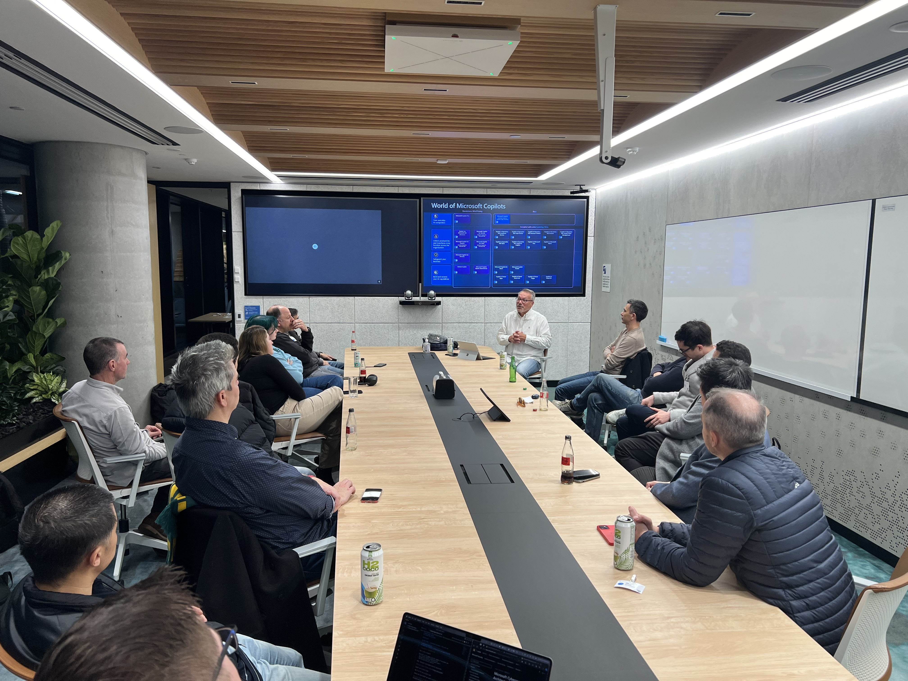
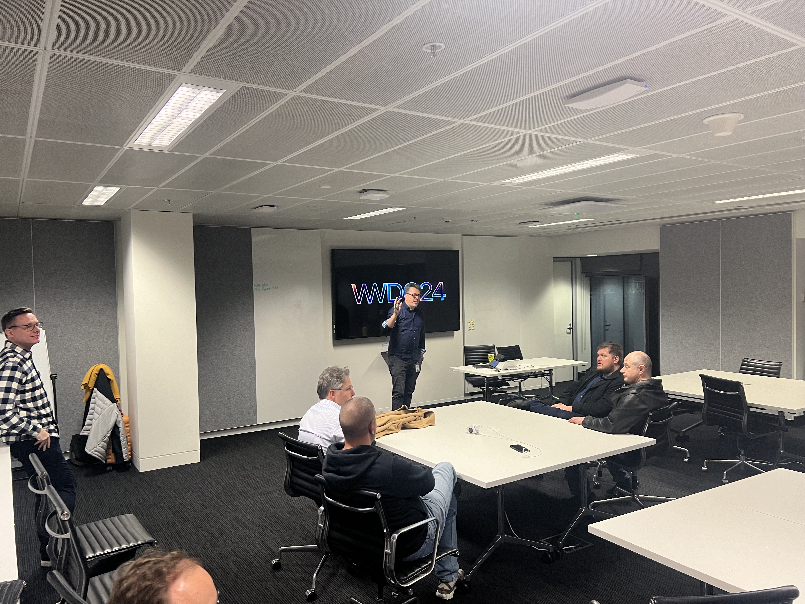
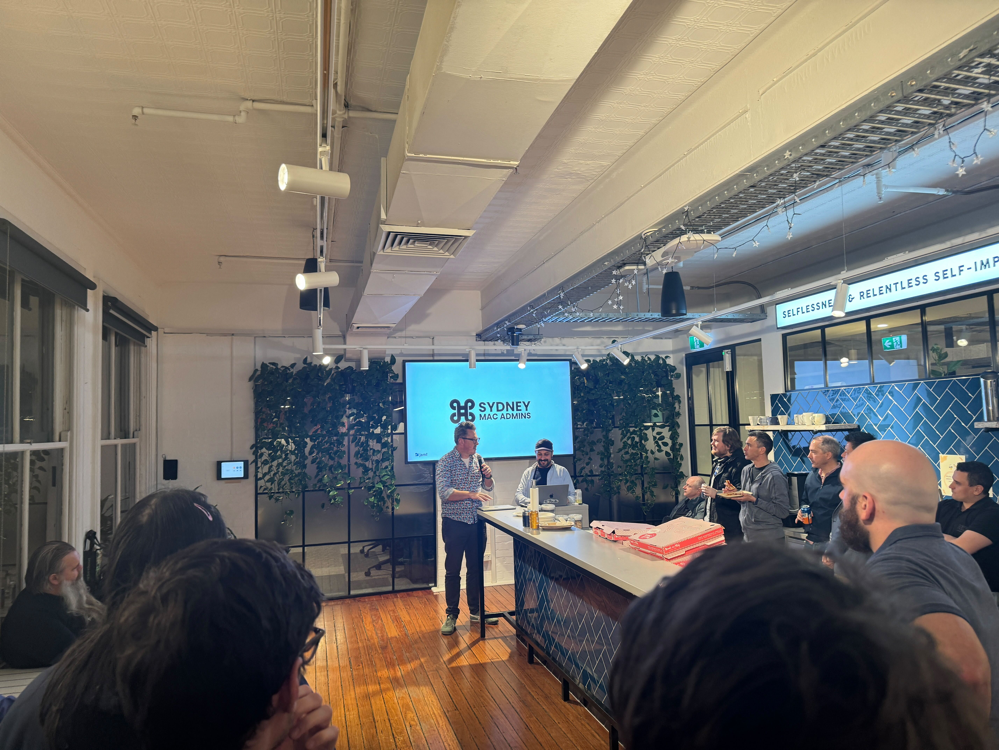
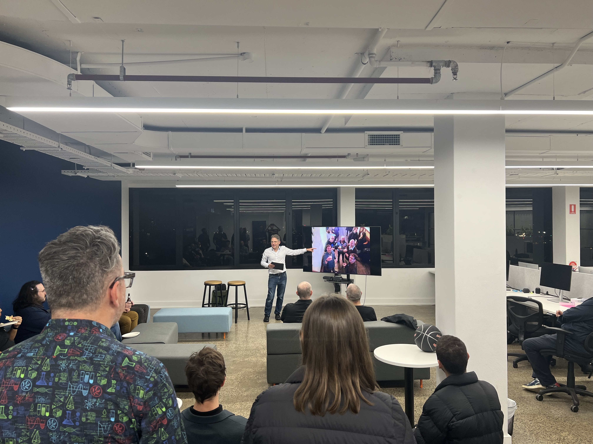
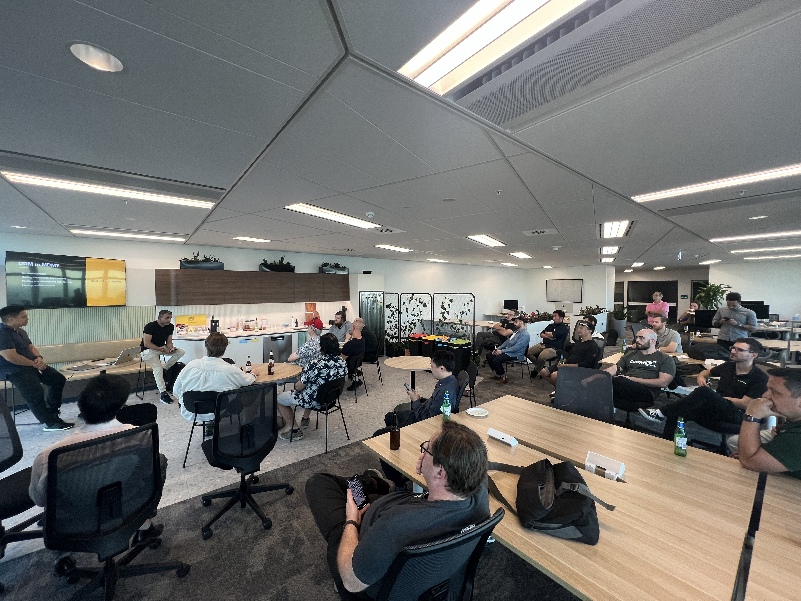
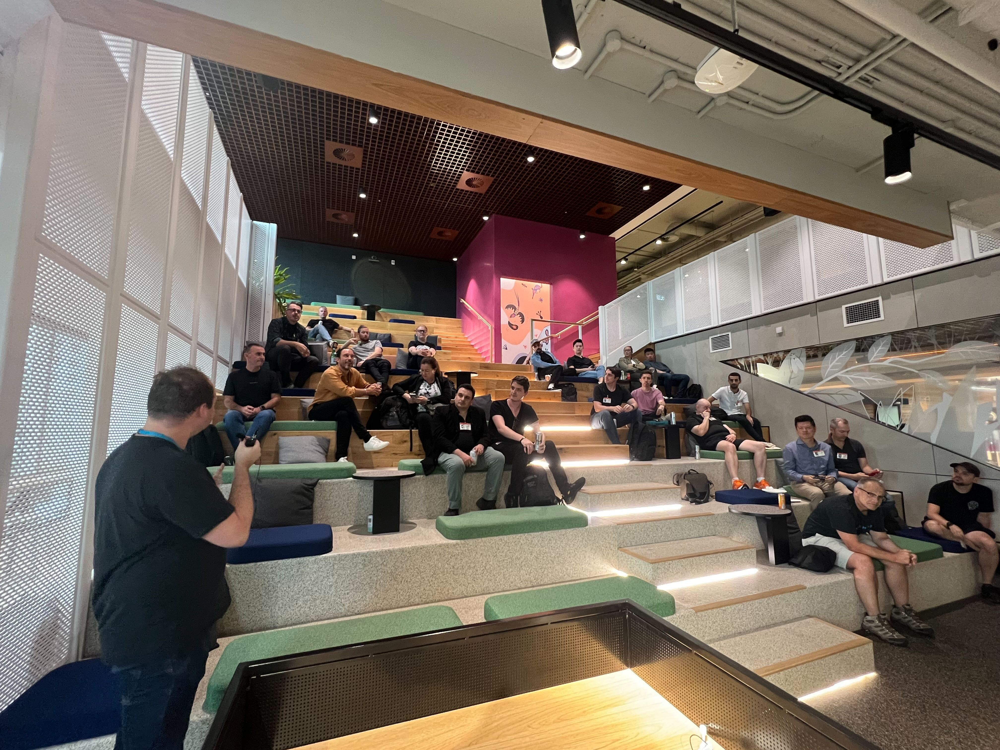

Next Meetup - November 28th 2024

Novembers' meetup will be hosted at the new event space ILUMNIA hosted by Macquarie.
This will be our last "formal" meetup of 2024 and we will hear from Tony about python and from Will on virtualisation.
Spots are limited so please only register if you intend to make it.
To register for this meetup click here Register
Previous Meetup - September 26th 2024

September's meetup had a great turn out to AWS offices as we heard from David and Jeremy on Jamf Setup Manager as they vouched for the User.
Previous Meetup - July 30th 2024

July's meetup at Microsoft or all places was well received where we heard about how Microsoft has evolved from old desktop models into cloud first services with Apple being part of the story.
Previous Meetup - June 25th 2024

June's meetup at Apples offices showed us all the new things about WWDC and stressed the importance of filing feedback early
Previous Meetup - May 21st 2024

Jamf's office was full with attendees as we got an overview of presentations at XWorld & dev/World.
For those who missed it the sessions that were recorded at the conferece can be found here
Previous Meetup - April 30th 2024

April's meetup had a great turnout as we listened to a great presentation on device lifecycle processes and challenges.
We also paid tribute to a great member of the community is a fashion that they would have approved of.
Previous Meetup - March 26th 2024

March's meetup at Kandji's Sydney offices had a great turnout.
We heard about DDM and the previous methods of OS updates and the new methods that DDM allows us.
We saw how Shortcuts can be leveraged with Apple Configurator to make some interesting workflows.
Previous Meetup - February 21st 2024

For our first meetup of 2024 was a big hit with a fantastic space hosted by AWS.
We saw some excellent presentations on topics around macOS EC2 environments, GitHub actions and what Vision Pro presentations will look like